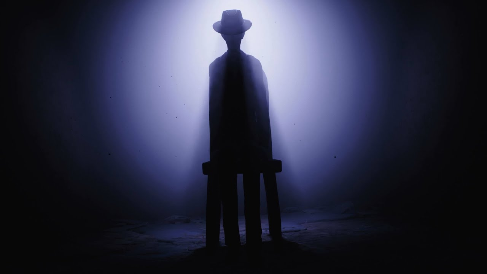

Final de Little Nightmares 2 ¿Que paso en verdad?
Al igual que el primer Little Nihtmares, la manera de narrar los acontecimientos de su secuela hace que no quede del todo claro qué sucede y los motivos. Hoy vamos a intentar encontrar explicaciones al final y final secreto de Little Nightmares 2, el cual arroja mucha luz a una posible teoría que expondremos abiertamente para tratar de encontrar explicaciones a todo lo ocurrido.
El final de Little Nightmares 2 puede tener una explicación bastante clara, algo más que lo arrojado al final de la primera parte. En él, vemos cómo Mono (así se llama el protagonista que controlamos durante toda la aventura) termina convirtiéndose en el hombre delgado con sombrero que nos ha perseguido en los últimos tramos de la aventura.
A este respecto es posible que la explicación más racional sea que en este mundo de pesadillas que habitamos, siempre debe haber un hombre delgado, y al acabar con él es Mono quien debe tomar su relevo. También es posible que simplemente fuera su destino, ya que comparte la habilidad de teletransportarse por los televisores y su amor por los sombreros, que no dejan de ser uno de los coleccionables del juego pero estan dispuestos con intención demasiado sugerente.
Pero, quizás, lo más extraño proviene de la traición que se produce justo al final de la aventura, cuando Six (el personaje al que rescatamos y que nos acompaña a lo largo de la aventura y que protagoniza el primer juego) arroja al vacío a Mono en lugar de ayudarlo a subir. Aquí hay dos posibles teorías que darían cierta lógica al final de Little Nightmares 2.
La primera es que Six se da cuenta de que Mono va a tener que asumir su papel como hombre del sombrero, por lo que decide dejarlo atrás para que cumpla su cometido. Quizás es una forma de salvar a ambos. Otra teoría, más profunda, conecta con la primera entrega: Six se ha dado cuenta de que se está transformando en un monstruo (vemos en varias ocasiones cómo se come a los enemigos y cómo reacciona de forma muy violenta) y, en realidad, está salvando a Mono, ya que terminará intentado comérselo. Y esto es fundamental, porque nos conduce hasta el final secreto de Little Nigthmares 2 y la posible explicación de que esta secuela, en realidad, es una precuela.
Little Nightmares 2 ¿Es una precuela?
Antes de ir con el vídeo adicional en sí mismo, vamos a intentar comprender la teoría que confirmaría que Little Nightmares 2, en realidad, es una precuela de la primera parte y sus sucesos ocurren antes y no después de la primera entrega. Es una explicación que se apoya en varios factores y tiene toda la lógica del mundo.
En primer lugar, Six no porta su particular impermeable amarillo cuando la encontramos en el bosque donde está retenida al principio del juego, encontrándolo después. Pero lo más importante, sin duda, son esos deseos irrefrenables de comer y de ponerse en actitud violenta que vemos en varias ocasiones. Si jugaron al primer Little Nightmares hasta el final, entonces seguramente saben que esta evolución va mucho más allá y no tendría sentido el estado en el que se encuentra en esta segunda parte, pero sí lo tendría si es una precuela.
Yendo ahora al final secreto de Little Nightmares 2, comprobamos varias cosas en esta pequeña secuencia. La primera la debemos escuchar: los rugidos de hambre que surgen de su tripa y que no habían aparecido hasta el momento en toda la aventura. Este es un claro indicativo de que está desarrollando el voraz apetito que veremos después en los sucesos narrados en la primera parte, donde en muchos momentos necesita comer lo que sea.
Después, y más importante, en la parte derecha de la pantalla se puede observar un pequeño papel que parece sugerir una especie de mapa del barco donde tienen los sucesos del primer Little Nightmares. Es decir, queda bastante claro que los sucesos de Little Nightmares 2 son previos a los acontecimientos de Little Nightmares.
El final y el final secreto de Little Nightmares 2 nos dejan con Mono transformado en el nuevo hombre del sombrero, condenado en ese mundo a relevar a quien ha vencido (o destinado a ello). También somos testigos de la transformación de Six, que se va volviendo cada vez más agresiva y violenta, desarrollando ese extraño hambre que también evoluciona durante el primer Little Nightmares, pues los sucesos ocurren justo después.